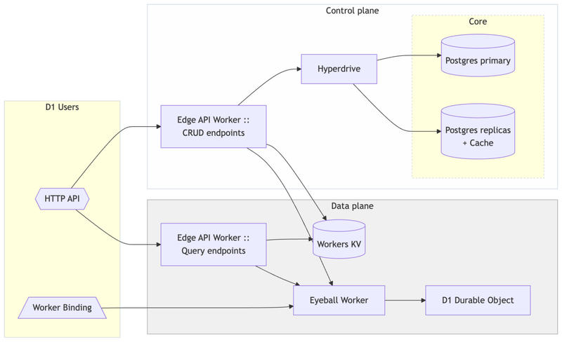

Feature 05 · ARTICLE · 2026 10
Off the Hot Path: How D1 Scales to Millions of Databases
Many small databases, one per user, application, preview environment, or tenant, are where AI-assisted development and vibe coding platforms are pushing applications. D1, our managed serverless database built on SQLite, lets you create millions of them and pay only for what you use. The problem was scaling the control plane without routing every query through a central bottleneck. Our answer: keep Postgres off the query path, let each database’s Durable Object correct itself through periodic heartbeats, and push usage accounting into queues, pre-aggregated tables, and caches that tolerate staleness. D1 now runs platforms with millions of created databases, hundreds of thousands of them active at any point.
Growth
As of October 8, 2026, live non-deleted databases grew 15x over the past year and 65x over two years. Daily active databases, those that ran at least one query that day, grew 18x over the past year. We load-tested periodically against a target well above expected growth, and that told us where to optimize.
Principles
Design every process for failure and idempotency; let the system self-correct.
Keep centralized single-region components out of any data plane hot path.
Put critical routing metadata in Workers KV, so cache misses rarely reach central databases.
Reach central Postgres through Hyperdrive, using read replicas wherever possible.
Precompute aggregations periodically instead of scanning during user requests.
Use eventual consistency and queues between components that don’t need strong consistency.
Load-test with realistic workloads and fix the bottlenecks you find first.
Architecture

Each D1 database is backed by one SQLite Durable Object, which makes millions of them easy to create. API requests reach the D1 Edge API Worker. CRUD endpoints query a central Postgres cluster through Hyperdrive in two configurations: cached against read replicas, uncached against the primary. Queries go through the Eyeball Worker, which proxies to the Durable Object and handles retries, errors, and observability. Workers KV caches read-heavy metadata at the edge. A user Worker’s D1 binding goes straight to the Eyeball Worker.
Every operation falls into one of three planes. The data plane covers queries; it must be fast and always at the edge. The control plane covers non-query requests and may depend on central components. The background plane covers analytics and billing; it can be eventually consistent and run anywhere.
Creating a database
Creation checks the account’s limits against cached Postgres replicas, generates a database UUID and a Durable Object ID with newUniqueId(), initializes the Durable Object, writes one metadata row to the Postgres primary, and records the ID mapping in Workers KV.
Endpoints that make several round-trips to Postgres, creation among them, are forwarded to data centers near Postgres, because a round-trip from afar can cost hundreds of milliseconds and nearby only a few. To place the database near the user by default, we then forward the Durable Object’s initialization to a data center close to where the request began.
Initialization and the Postgres write sit inside a retry loop, and each retry uses new IDs. The Postgres write is the creation checkpoint: after it, the database exists, even if the response never reaches the user. A final confirmation to the Durable Object runs in waitUntil() and is allowed to fail; it lets the object write its metadata to KV.
Why not one Postgres transaction? It cannot scale. It would hold connections open while a Durable Object initializes, possibly on the other side of the world.
Heartbeats
Every 30 seconds, plus per-database jitter, each Durable Object asks the control plane for its state (active or deleted) and its account limits. Slightly stale answers are fine, so Hyperdrive’s caches or a replica can serve them.
This is what makes failures self-correcting. Suppose Durable Object A is initialized and the Postgres write fails. The retry initializes B, and this time the write succeeds. Two objects now exist; users can reach only B, since only B is in Postgres. Within 30 seconds A heartbeats, learns its database does not exist, and marks itself deleted. Fresh UUIDs on each retry matter here: reusing one would leave several objects believing they own the same database.
Order matters too. We initialize the object before writing to Postgres; otherwise queries could arrive at an uninitialized object and be rejected.
The heartbeat also repairs Workers KV. KV is eventually consistent with no consistent read, so the Durable Object serializes writes to its own KV entry. Deletion works the same way in reverse, and the object stores its own state, so it can reject queries even when KV is stale.
Keeping queries off Postgres
An HTTP query runs the Edge API Worker near the user, which reads the database’s metadata from Workers KV and calls the Eyeball Worker, which forwards to the Durable Object. Only in rare cases, a failed write or an availability issue, does the lookup fall back to Hyperdrive, which checks its cache near the caller, then near Postgres, and only then the replicas. Binding requests skip the lookup entirely, because the binding carries the metadata.
We use newUniqueId() rather than naming Durable Objects because naming would require a lookup to a central name-to-ID mapping, and we would still need other metadata to choose the right namespace: one lookup would become two. For most applications, including many of ours, naming works great; start there, and move to unique IDs only if you have to.
We use KV alongside Hyperdrive’s cache because KV is a durable store, not just a cache. A miss in KV’s edge cache is served from KV’s storage, not from Postgres. In a catastrophic cache purge, a million databases fetching routing information at once would lead to metastable failures.
Storage limits
D1 allows 5 GB per account on the Free plan and 1 TB on Workers Paid, which can be raised on request.
Each Durable Object publishes storage usage, aggregated per edge server, to a Kafka-like queue. Usage can be stale; what matters is that Postgres is never overloaded, so we limit the number of consumers.
Consumers write each database’s size to database_stats. Enforcement needs the account total, and SELECT sum(storage) ... scales linearly with the number of databases. Updating a per-account row on every write would cause lock contention for large accounts. So a trigger writes each change as a delta to account_database_stats_changes, and a job runs every second to fold them into account_database_stats:
WITH updates AS MATERIALIZED (
DELETE FROM account_database_stats_changes
RETURNING *
),
changes AS MATERIALIZED (
SELECT
account_id,
SUM(storage_change) AS storage
FROM updates
GROUP BY account_id
)
INSERT INTO account_database_stats (account_id, storage)
SELECT
account_id,
storage
FROM changes
ON CONFLICT (account_id) DO UPDATE
SET storage = account_database_stats.storage + EXCLUDED.storage;
The DELETE ... RETURNING consumes pending changes atomically, and Postgres runs it exactly once and to completion. The total is eventually consistent, which we already accepted by using a queue.
The heartbeat reads that total through Hyperdrive’s cache. The cache key is the query plus its parameters, so with the account ID as the only parameter, every database in the account shares one cached value. Hyperdrive’s default 60-second expiry applies to all queries; to refresh this one sooner, we add a dynamic_ttl parameter that changes every X seconds. Adding the database ID would give an exact per-database answer but would wreck the hit rate. Enforcement reacts a little slower than it could, and that is acceptable. A separate process snapshots usage into ClickHouse, the source of truth for storage billing.
Row limits at the edge
Free-tier accounts also have daily row limits. Every query’s rows read and written become usage events in ClickHouse, which drive row-based billing. A central Limiter queries them periodically since the start of the day; ClickHouse handles that kind of query better than Postgres. For each free-tier account over the limit, it emails the owner, deduplicated through the day, and sets a key in Quicksilver, our globally distributed key-value store, expiring at day’s end. An upgrade clears the key. Durable Objects check Quicksilver at the edge and refuse queries while the key exists. Postgres sees none of this load. We may move other limits to this pattern in the future.
Conclusion
D1 separates control plane concerns from hot-path query execution. Postgres holds transactional metadata, ClickHouse handles analytics, and Workers KV carries globally replicated routing data. The patterns and trade-offs here reflect real decisions made for D1; use them as a foundation for your own applications on Workers.